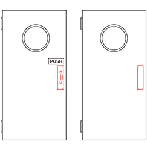
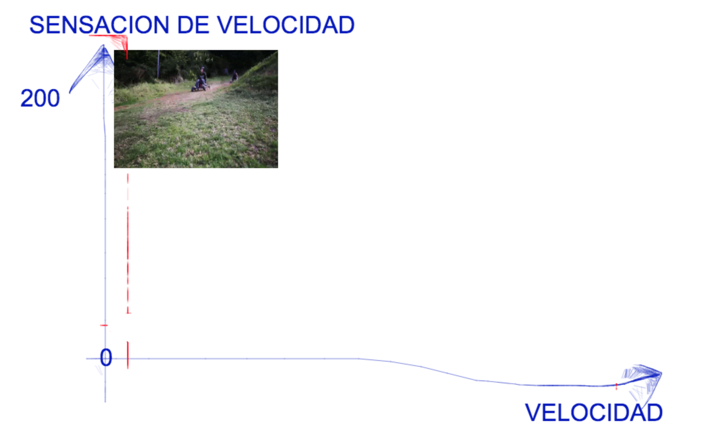
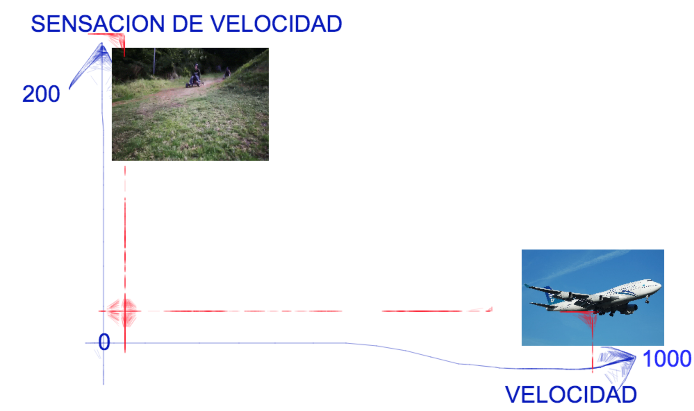
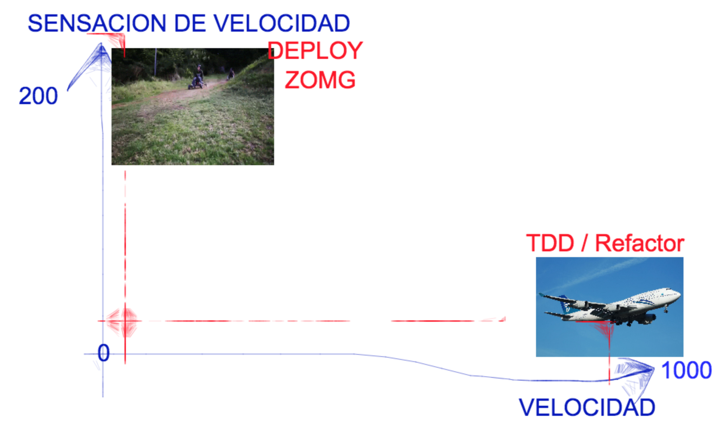

Simplificando
Código
Tute Costa
https://github.com/tute/refactoring-workshop
Patrones de
Refactorización
Vamos a ver
- Tres anomalías comunes en software
- Patrones para refactorizarlas
Vamos a ver
- 👉 Código confuso
- "NoMethodError: Undefined method on nil"
- Un Método Gigante
1: Código confuso
# Removes duplicates
if hash[row[1]][date] != row[0]
# ... code ...
1: Código confuso
# Removes duplicates
if hash[row[1]][date] != row[0]
# ... code ...
if remove_duplicates?
# ... code ...
def remove_duplicates?
hash[row[1]][date] != row[0]
Método que revela
la intención
Agregar comentarios si no tiene
Transformarlos en código
Los comentarios son ahora ejecutables
El código se describe a sí mismo

Los comentarios son código
El código se describe a sí mismo
EXITO TOTAL
Método que revela la intención
Es el patrón más simple

Pero también el más difícil
Método que revela la intención
El diseño puede prescindir de instrucciones
Tests
Para cambiar código sin cambiar comportamiento
Gestor de versiones
Para abortar misión
Vamos a ver
- Código confuso -> Método que revela la intención
- 👉 "NoMethodError: Undefined method on nil"
- Un Método Gigante
Ey, nil! 👋🏼
current_user.name
NoMethodError:
undefined method `name'
for nil:NilClass
Ey, nil! 👋🏼
Undefined method `name' for nil
session[:user] # nil
session[:blog_pozt] # nil
array[length + 1] # nil
@current_uZer # nil
if false then 1 end # nil
empty_method() # nil
Ey, nil! 👋🏼
Un símbolo es mejor que nil:
def current_user
User.find(id) || :guest_user
end
current_user.name
undefined method `name' for :guest_user:Symbol
ifs por doquier
Donde pueda haber nil hay que chequear con if
if user != :guest_user
"Hi #{user.name}!"
else
"Hi guest!"
end
En lugar de nil, devolver un nuevo
objeto
def user
User.find(id) || NullUser.new
end
class NullUser
def name; 'guest'; end
end
# if user
"Hi #{user.name}!"
# else
# "Hi guest!"
# end

Pero... ¿porqué?
Pero... ¿porqué?
Pero... ¿porqué?
Pero... ¿porqué?
Pero... ¿porqué?
Vamos a ver
Código confuso -> Método que revela la intención
"Undefined method on nil" -> Objecto Nulo
👉 Un Método Gigante
Método Gigante
class ExportJob
# Instance variables
# Many other methods
#
# And...
def self.row_per_day_format(file_name)
file = File.open file_name, 'r:ISO-8859-1'
# hash[NivelConsistencia][date] = [[value, status]]
hash = { '1' => {}, '2' => {} }
dates = []
str = ''
CSV.parse(file, col_sep: ';').each do |row|
next if row.empty?
next if row[0] =~ /^\/\//
date = Date.parse(row[2])
(13..43).each do |i|
measurement_date = date + (i-13)
# If NumDiasDeChuva is empty it means no data
value = row[7].nil? ? -99.9 : row[i]
status = row[i + 31]
hash_value = [value, status]
dates << measurement_date
hash[row[1]][measurement_date] = hash_value
end
end
dates.uniq.each do |date|
if !hash['1'][date].nil? && hash['2'][date].nil?
# Only 'bruto' (good)
value = hash['1'][date]
str << "#{date}\t#{value[0]}\t#{value[1]}\n"
elsif hash['1'][date].nil? && !hash['2'][date].nil?
# Only 'consistido' (kind of good)
value = hash['2'][date]
str << "#{date}\t#{value[0]}\t#{value[1]}\n"
else
# 'bruto' y 'consistido' (has new and old data)
old_value = hash['1'][date]
new_value = hash['2'][date]
str << "#{date}\t#{new_value[0]}\t#{old_value[1]}\t#{old_value[0]}\n"
end
end
str
end
Extraer Objeto
- Crear una clase que reciba los mismos argumentos del método
- Copiar y pegar el método en la nueva clase vacía
- Reemplazar el método original con una llamada a la nueva clase
- Aplicar "método que revela la intención" sobre la nueva clase
Therapeutic
Refactoring
Katrina Owens
http://confreaks.com/videos/1071-cascadiaruby2012-therapeutic-refactoring
Próximos pasos
Las 4 reglas
Clases de 100 líneas o menos
Métodos de 5 líneas o menos
Métodos con 4 argumentos o menos
Un controlador instancia sólo un objeto
Vimos
Código confuso -> Método que revela la intención
"Undefined method on nil" -> Objecto Nulo
Un Método Gigante -> Reemplazar con "Method Object"
Preguntas!
tutecosta@gmail.com - https://github.com/tute
Principal Engineer at
EpionHealth.com